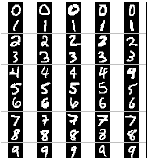
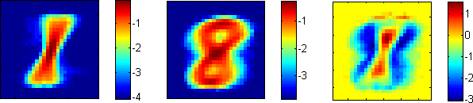
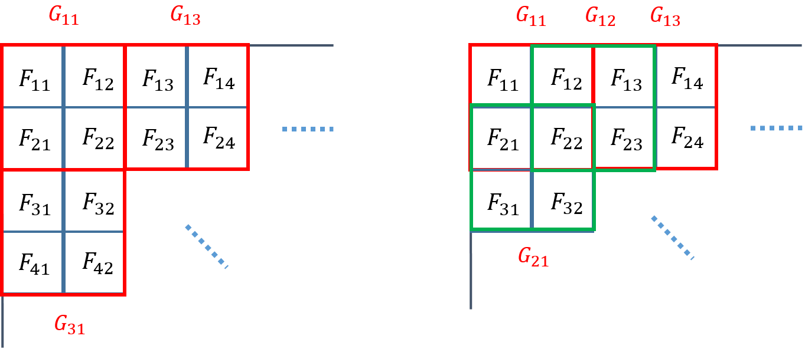

CS440 Fall 2015
Assignment 3: Naive Bayes Classification
Due date: Monday, November 16, 11:59:59 PM
The goal of this assignment is to implement a Naive Bayes classifier as described
in this lecture and to apply it to
the task of classifying visual patterns and text documents. As before, you can
work in teams of up to three people (three-unit students with three-unit students,
four-unit students with four-unit students).
Contents
Part 1: Digit classification

(Adapted from Berkeley CS 188 project 5)
Data: This file is a zip archive containing
training and test digits, together with their ground truth labels (see readme.txt in the zip
archive for an explanation of the data format). There are 5000 training exemplars (roughly 500
per class) and 1000 test exemplars (roughly 100 per class).
Part 1.1 (for everybody): Single pixels as features
- Features: The basic feature set consists of a single binary indicator feature
for each pixel. Specifically, the feature Fij indicates the status of the (i,j)th
pixel. Its value is 1 if the pixel is foreground (no need to distinguish between the two different
foreground values), and 0 if it is background. The images are of size 28*28, so there are
784 features in total.
- Training: The goal of the training stage is to estimate the likelihoods
P(Fij | class) for every pixel location (i,j) and for every
digit class from 0 to 9. The likelihood estimate is defined as
P(Fij = f | class) = (# of times pixel (i,j) has value f in training examples from this class) /
(Total # of training examples from this class).
In addition, as discussed in the lecture, you have to smooth the likelihoods to
ensure that there are no zero counts. Laplace smoothing is a very simple method
that increases the observation count of every value f by some constant k. This corresponds to adding
k to the numerator above, and k*V to the denominator (where V is the number of possible
values the feature can take on). The higher the value of k, the stronger the smoothing. Experiment with different integer
values of k (say, from 1 to 50) and find the one that gives the highest classification accuracy.
You should also estimate the priors P(class) by the empirical
frequencies of different classes in the training set.
- Testing: You will perform maximum a posteriori (MAP) classification of test digits
according to the learned Naive Bayes model. Suppose a test image has feature values f1,1,
f1,2, ... , f28,28. According to this model, the posterior probability (up to scale)
of each class given the digit is given by
P(class) ⋅ P(f1,1 | class) ⋅ P(f1,2 | class) ⋅ ... ⋅
P(f28,28 | class).
Note that in order to avoid underflow, it is standard to work with the log of the above quantity:
log P(class) + log P(f1,1 | class) + log P(f1,2 | class) + ... +
log P(f28,28 | class).
After you compute the above decision function values for all ten classes for every test image, you will use
them for MAP classification.
- Evaluation: Use the true class labels of the test images from the testlabels
file to check the correctness of the estimated label for each test digit. Report your performance in terms
of the classification rate for each digit (percentage of all test images of a given digit correctly
classified). Also report your confusion matrix. This is a 10x10 matrix whose entry in row r and column c
is the percentage of test images from class r that are classified as class c. In addition, for each digit class,
show the test examples from that class that have the highest and the lowest posterior probabilities
according to your classifier. You can think of these as the most and least "prototypical" instances of each digit class
(and the least "prototypical" one is probably misclassified).
Important: The ground truth labels of test images should be used only
to evaluate classification accuracy. They should not be used in any way during the decision process.
Tip: You should be able to achieve at least 70% accuracy on the test set.
One "warning sign" that you have a bug in your implementation is if some digit gets 100% or 0% classification
accuracy (that is, your system either labels all the test images as the same class, or never wants to label
any test images as some particular class).
- Odds ratios: When using classifiers in real domains, it is important to be able to inspect
what they have learned. One way to inspect a naive Bayes model is to look at the most likely features for a given label.
Another tool for understanding the parameters is to look at odds ratios. For each pixel feature
Fij and pair of classes c1, c2, the odds ratio is defined as
odds(Fij=1, c1, c2) =
P(Fij=1 | c1) / P(Fij=1 | c2).
This ratio will be greater than one for features which cause belief in c1 to increase over
the belief in c2. The features that have the greatest impact on classification are those
with both a high probability (because they appear often in the data) and a high odds ratio
(because they strongly bias one label versus another).
Take four pairs of digits that have the highest confusion rates according to your confusion matrix,
and for each pair, display the maps of feature likelihoods for both classes as well as the odds ratio
for the two classes. For example, the figure below shows the log likelihood maps for 1 (left), 8 (center),
and the log odds ratio for 1 over 8 (right):

If you cannot do a graphical display like the one above, you can display the maps in ASCII format
using some coding scheme of your choice. For example, for the odds ratio map, you can use '+' to
denote features with positive log odds, ' ' for features with log odds close to 1, and '-' for
features with negative log odds.
Part 1.2 (for four-unit students): Pixel groups as features
Credit: Yanglei Song
Instead of each feature corresponding to a single pixel, we can form features from groups of adjacent pixels. We can view this as a relaxation of the Naive Bayes assumption that allows us to have a more accurate model of the dependencies between the individual random variables.
Specifically, consider a 2*2 square of pixels with top left coordinate i,j and define a feature Gi,j that corresponds to the ordered tuple of the four pixel values. For example, in the figure below, we have
G1,1 = (F1,1, F1,2, F2,1, F2,2).

(The exact ordering of the four pixel values is not important as long as it's consistent throughout your implementation.) Clearly, this feature can have 16 discrete values.
The 2*2 squares can be disjoint (left side of figure) or overlapping (right side of figure). In the case of disjoint squares, there are 14 * 14 = 196 features;
in the case of overlapping squares, there are 27 * 27 = 729 features.
We can generalize the above examples of 2*2 features to define features corresponding to n*m disjoint or overlapping pixel patches. An n*m feature will have 2n*m distinct values, and as many entries in the conditional probability table for each class. Laplace smoothing applies to these features analogously as to the single pixel features.
In this part, you should build Naive Bayes classifiers for feature sets of n*m disjoint/overlapping pixel
patches and report the following:
- Test set accuracies for disjoint patches of size 2*2, 2*4, 4*2, 4*4.
- Test set accuracies for overlapping patches of size 2*2, 2*4, 4*2, 4*4, 2*3, 3*2, 3*3.
- Discussion of the trends you have observed for the different feature sets (including single pixels), in particular, why certain features work better than others for this task.
- Brief discussion of running time for training and testing for the different feature sets (which ones are faster and why, and how does the running time scale with feature set size).
Tip: You should be able to achieve over 80% accuracy with your best feature set.
Part 1 Extra Credit
Part 2: Text Document Classification
Part 2.1: For three-unit students
Sources: spam detection dataset, Cornell movie review dataset, full 20 Newsgroups dataset. With help from Jason Cho, Yanglei Song, Huan Gui, and Keyang Zhang
The goal of this part of the assignment is classification of text documents. You will be using the following two datasets:
Each dataset contains training and test documents that have already been preprocessed into a "bag of words" representation. Each line of the training and test files has the following format:
[label] [word1]:[count1] [word2]:[count2] ... [wordn]:[countn]
The email dataset contains 700 training documents and 260 test documents. Label of 0 denotes normal email, while 1 denotes spam.
The movie review dataset has 4000 training documents (2000 positive and 2000 negative), and 1000 test documents (500 positive and 500 negative). Label of -1 denotes a negative review, and label of 1 denotes a positive review.
For each dataset, train a Naive Bayes classifier on the training data and then apply it to the test data to
predict the category labels of the test documents. In order to do this, you will first need to create dictionaries consisting of all unique words occurring in the training documents, and then estimate conditional probability tables over these dictionaries for each class. Be sure to use Laplace smoothing. Note that there will be words in the test documents that do not occur in the dictionary; simply ignore those. You should implement the following two Naive Bayes models:
- Multinomial Naive Bayes: This is the model described in the lecture, where a document of length N has variables W1, ... , WN and each variable Wi takes on values from 1 to V, where V is the size of the vocabulary. You estimate the likelihoods P(Wi = k | class) by frequency counts, as explained in the lecture.
- Bernoulli Naive Bayes: In this model, every document is described by V binary variables W1, ... , WV, and Wi = 1 if word i appears at least once in the document, and 0 otherwise. You estimate the likelihoods P(Wi = 1 | class) as the proportion of documents from that class that feature the ith word.
For each of the two models and two datasets, report your classification rate on the test documents for each class, as well as the confusion matrix. You should be able to get over 90% accuracy on the email dataset, and over 70% on the movie dataset.
Additionally, for each class, report the top 20 words with the highest likelihood.
Repeat all the steps of 2.1 for the 8 newsgroups dataset, which is in the same format
as the datasets of part 2.1. It contains 1900 training and 263 test documents, and the numeric class labels correspond to the following categories:
sci.space
comp.sys.ibm.pc.hardware
rec.sport.baseball
comp.windows.x
talk.politics.misc
misc.forsale
rec.sport.hockey
comp.graphics
You should be able to get over 80% accuracy on this dataset.
Extra Credit for Part 2
- Experiment with advanced techniques for improving performance of Naive Bayes on this dataset,
such as lemmatization and tf-idf weighting (not covered in class).
- Perform classification on the full 20 Newsgroups dataset.
- Visualize the bag-of-words representations of the documents using word cloud maps.
Report Checklist
Part 1:
- For everybody:
- Briefly discuss your implementation, especially the choice of the smoothing constant.
- Report classification rate for each digit and confusion matrix.
- For each digit, show the test examples from that class that have the highest and lowest posterior probabilities according to your classifier.
- Take four pairs of digits that have the highest confusion rates, and for each pair, display feature likelihoods and odds ratio.
- For four-unit students:
- Report test set accuracies for disjoint patches of size 2*2, 2*4, 4*2, 4*4, and for overlapping patches of size 2*2, 2*4, 4*2, 4*4, 2*3, 3*2, 3*3.
- Discuss trends for the different feature sets.
- Discuss training and testing running time for different feature sets.
Part 2:
- For everybody: For multinomial and Bernoulli models, and for both datasets, report
the classification rate for each class and show the confusion matrix. For each class, give the top 20 words with the highest likelihood.
- For four-unit students: report the same items as for 2.1 on the 8 newsgroups dataset.
Extra credit:
-
We reserve the right to give bonus points for any advanced
exploration or especially challenging or creative solutions that you implement.
Three-unit students always get extra credit for submitting solutions to four-unit problems.
If you submit any work for bonus points, be sure it is clearly indicated in your report.
|